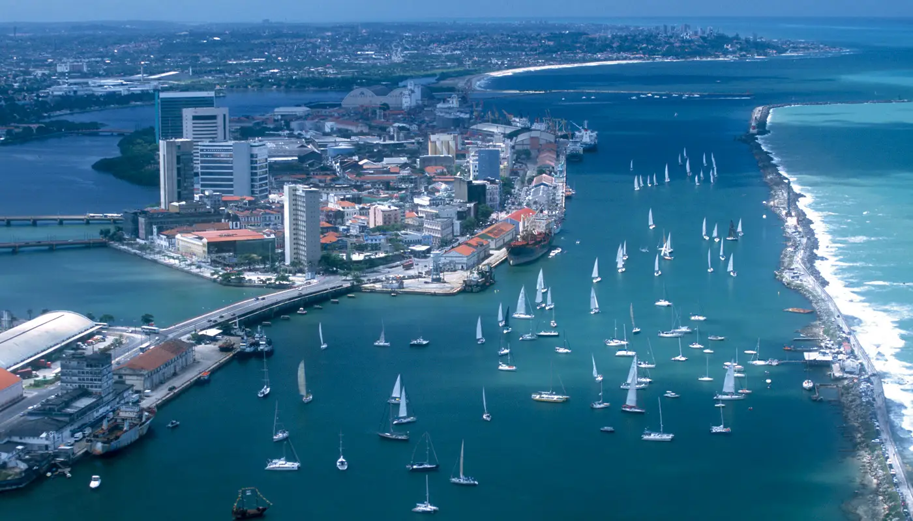
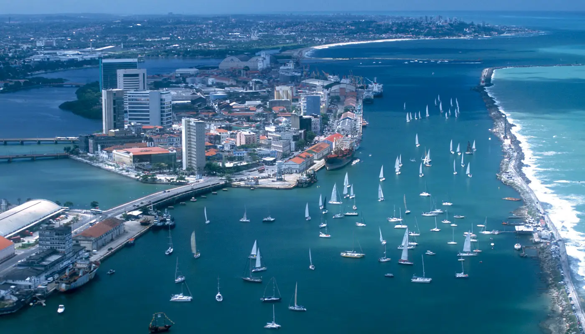

Esse site foi produzido para atividade do curso de Introdução a Programação Proz Educação.
Conheça alguns dos pincipais cartões postais da cidade de Refice, capital do estado de Pernambuco
 

Saiba mais sobre essa cidade que coincilia história, cultura, artesanato, festas e muito mais!!! Para explorar mais sobre Recife/PE fique por aqui e navegue por essa experiência!
Autor: Victor Moreira